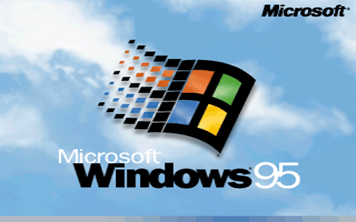

This site is under construction
Audio test
=====================================================================================
MP3 Test
Windows 95 remix

(=========[Windows 95 remix]===========)
Uploaded January 31st 2015
File type: MP3
File size: 1,329,946 bytes (1,329.94 Kilobytes) (1.32 Megabytes)
Download here
Windows 95 Remix.mp3
Description
A windows 95 remix (of the startup sound) uploaded to test HTML5 in SNU
=====================================================================================
Copyleft Sean Walla Walla 2015-2019